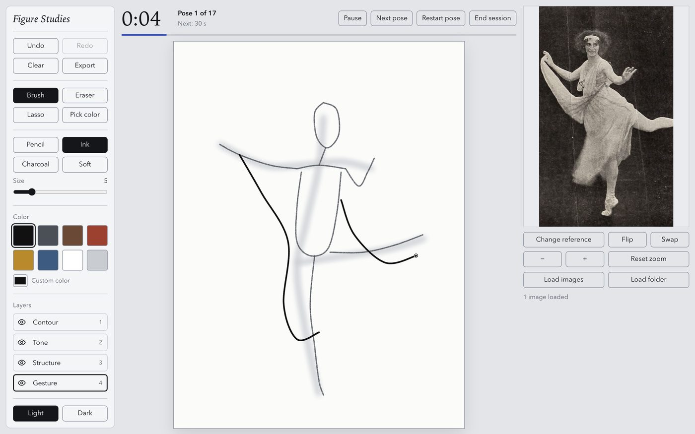
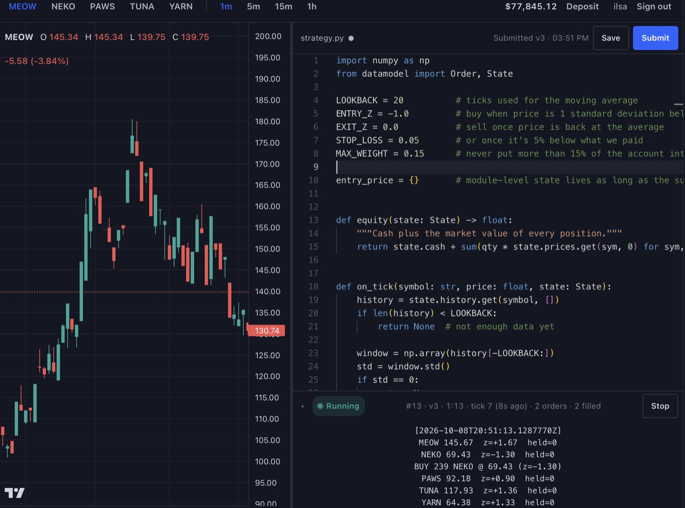
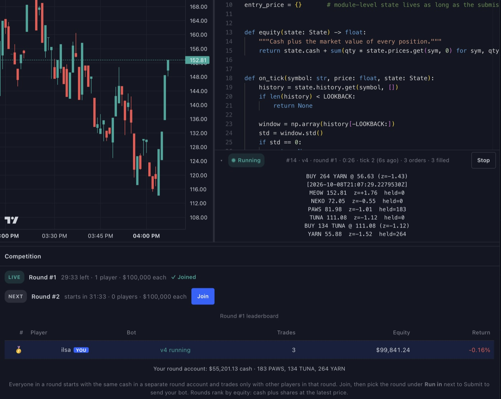
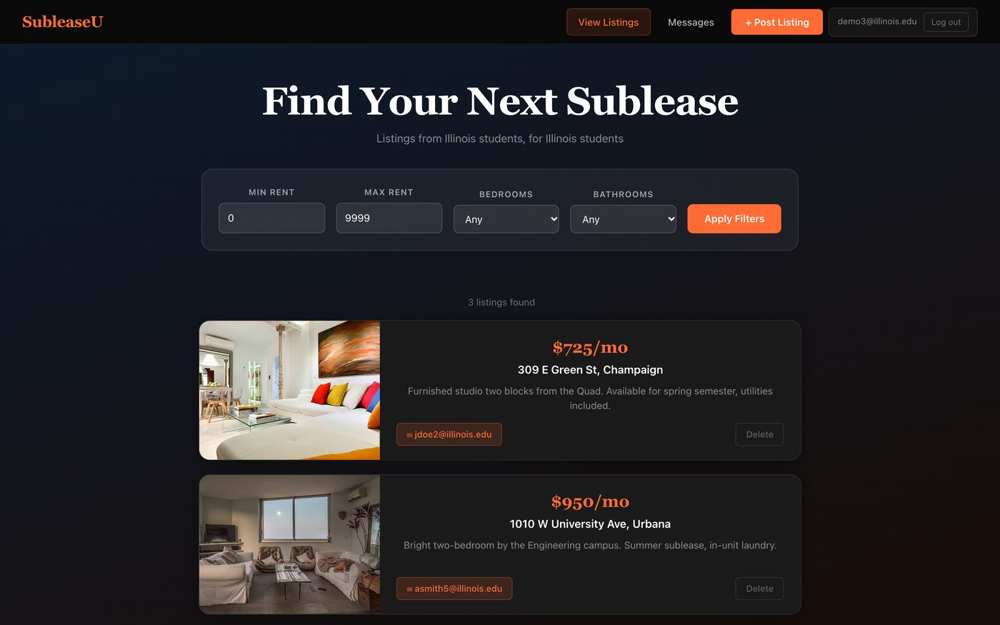
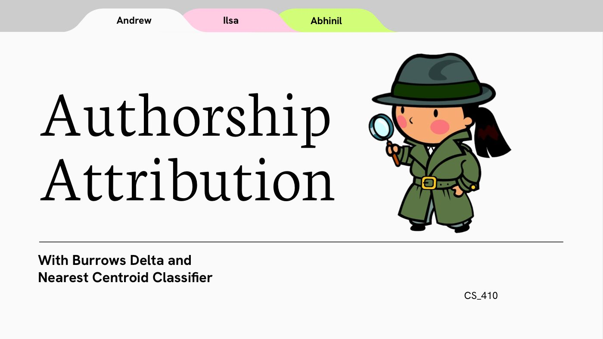
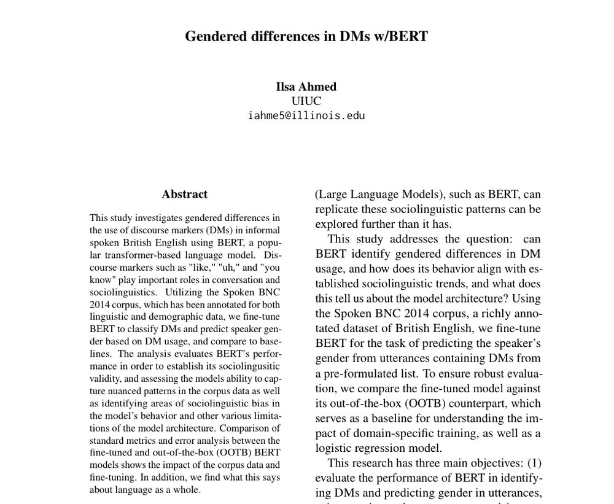

on main, just made FigureDraw
Hello.
I’m Ilsa, a UIUC CS + Linguistics grad who builds full-stack, utilizing agentic workflows
Log
A running record of things I've made, roughly in the order I made them.
-
FigureDraw

A free, in-browser studio for timed figure-drawing practice. Load your own reference photos, run gesture or class-style sessions, and draw on separate gesture, structure, tone and contour layers with pencil, ink and charcoal brushes, then export the result as a PNG or layered ZIP.
-
Stock Bot Battle


A multiplayer stock market where players write Python trading bots and compete in timed rounds. Everyone starts with the same cash, bots trade five cat-themed stocks against each other and a house market maker, and a live leaderboard ranks players by equity. A matching engine executes orders transactionally over an append-only ledger, untrusted bot code runs in resource-limited Docker sandboxes, and players sign in with passwordless magic links that store only hashed, single-use tokens.
-
AutoWiki
Generates Wikipedia-style long-form articles, adapted from Stanford's STORM method. It creates expert personas, has each one interview a web-searching agent, stores what it finds in a vector database, then outlines and writes each section from that research.
Source -
SubleaseU

An app for UIUC students to post and find subleases. Listings can be filtered by rent, bedrooms and bathrooms, posting is limited to @illinois.edu accounts, and renters can message the person who posted a listing.
Source
LLM & NLP work in Python
-
Authorship Attribution

Scrapes books from Project Gutenberg and identifies their authors from writing style, using Burrows' Delta and a nearest-centroid classifier.
Source -
BERT: Gendered Discourse Marker Usage

A study of whether BERT picks up gendered patterns in discourse markers like "like", "uh" and "you know". I fine-tuned BERT on the Spoken BNC 2014 corpus to predict speaker gender, then compared it with out-of-the-box BERT and a logistic regression baseline and analyzed where each one went wrong.
Source & paper -
Sentiment Classifier
A small sentiment classifier that rates a Movie Review as positive or negative.
Tools
What I reach for most
Languages
- Python
- TypeScript
- JavaScript
- C#
- Java
- SQL
Web
- React
- Next.js
- Node.js
- Fastify
- ASP.NET
- FastAPI
- Flask
- HTML/CSS
Data & ML
- PostgreSQL
- MongoDB
- QuestDB
- pandas
- NumPy
- scikit-learn
- PyTorch
AI & LLMs
- LangChain
- LangGraph
- RAG
- Vector embeddings
- OpenAI API
Cloud & APIs
- AWS
- Azure
- Stripe
- Twilio
- Microsoft Graph
Infra & tools
- Git
- Docker
- GitHub Actions
- Linux
- Vercel
- Figma
Experience
B.S. Computer Science + Linguistics (CS+X), University of Illinois Urbana-Champaign, May 2026
CompTIA Security+ (May 2026)
-
Software Engineer Intern
Lawly
– Present
- Fixed 25+ production bugs in a Next.js / React 19 and Fastify + Node.js app on PostgreSQL, including a Stripe checkout error that blocked ~25% of payments.
- Extended the Twilio integration to send SMS appointment reminders to ~2,600 users a week.
- Refactored 20 files of AI-generated TypeScript into typed, tested modules, cutting ~6,000 lines of code and reducing related bug reports by ~30%.
-
Software Engineer, Telemetry Team
Illini Solar Car
–
- Built a Python asyncio pipeline ingesting 50,000+ CAN bus sensor readings per minute into QuestDB, and added indexing and partitioning that cut dashboard query time from ~65 s to ~0.2 s.
- Designed the FastAPI REST layer and React dashboard that 37 team members used to monitor the car live during races and test drives.
- Set up Docker and GitHub Actions CI/CD so every pull request automatically runs tests, linting, and image builds.
-
Design Team Member
HackIllinois 2026
–
- Designed the illustrations and UI for the 2026 event website in Figma and Illustrator.
- Created the sponsor track intros (Stripe, John Deere, Modal, Caterpillar), the event-day leaderboard display, and campus signage, flyers, and social posts for the HackAstra campaign. See them on the Art page.
-
Software Engineer Intern
Treevah
–
- Co-built the core 3-panel file manager in React and Node.js, released to 172 beta users and featured in the company's investor demo.
- Integrated the Microsoft Graph API to sync nested OneDrive folders, and added Microsoft sign-in with MSAL (OAuth 2.0) on Azure.
-
Undergraduate Researcher
Forward Data Lab, UIUC
–
- Built document-ranking pipelines with TF-IDF and vector similarity, improving precision and F1 by 50% over the baseline, and served results through Flask REST APIs backed by PostgreSQL and MongoDB.
Get in touch
Open to full stack dev roles, and AI/ML work or research. If my work looks promising, shoot me an email or connect on LinkedIn!
ilsa.ahmedb@gmail.com